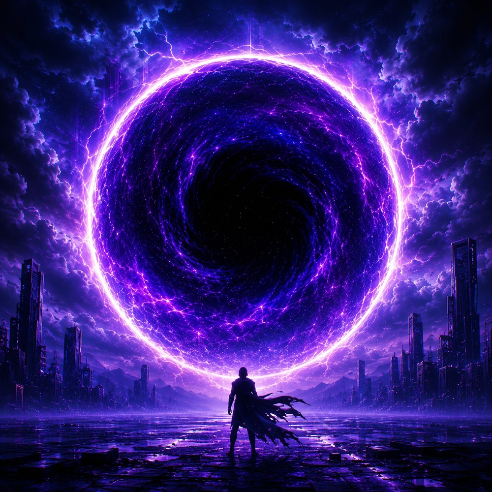
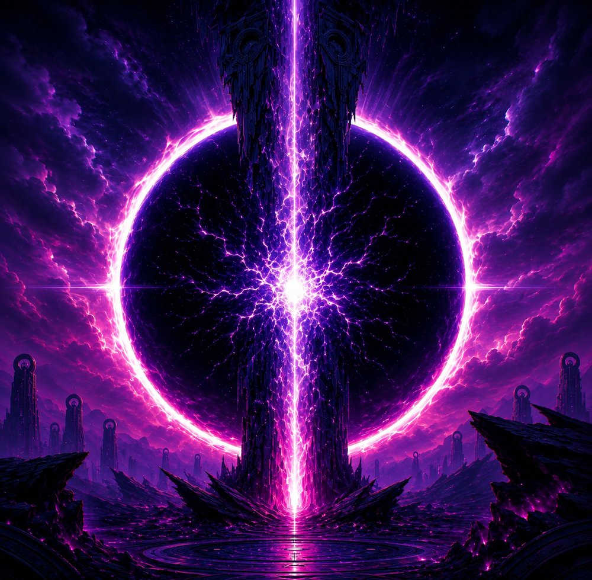
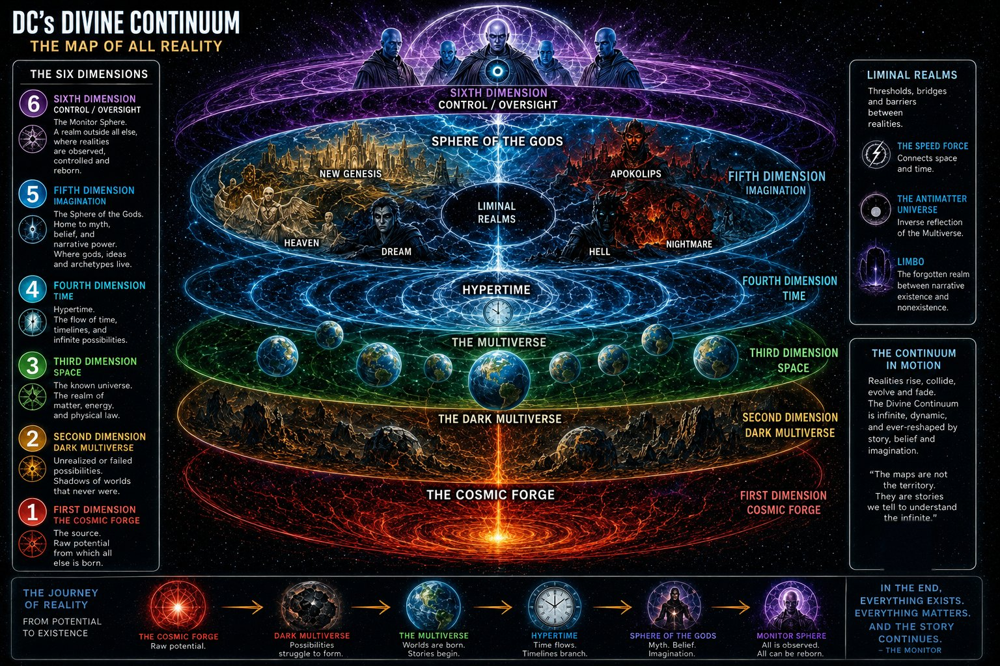
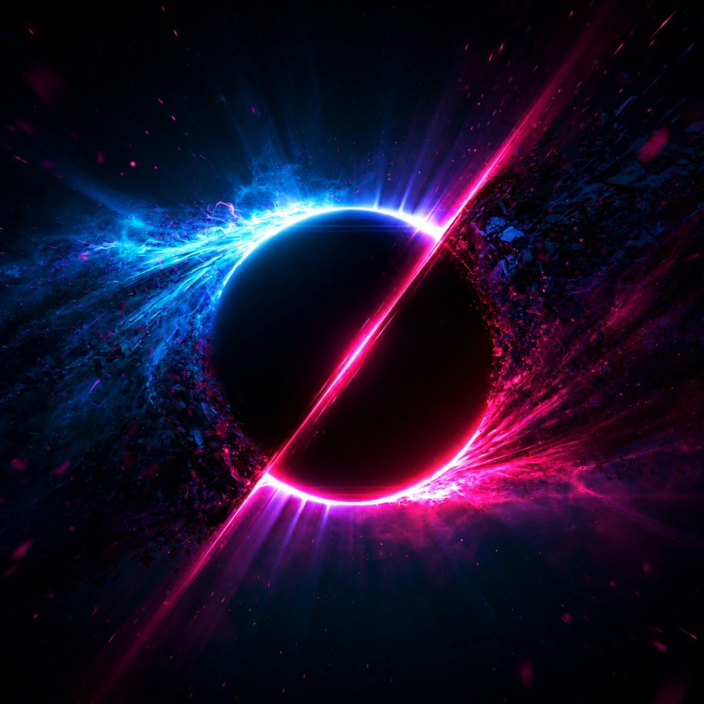
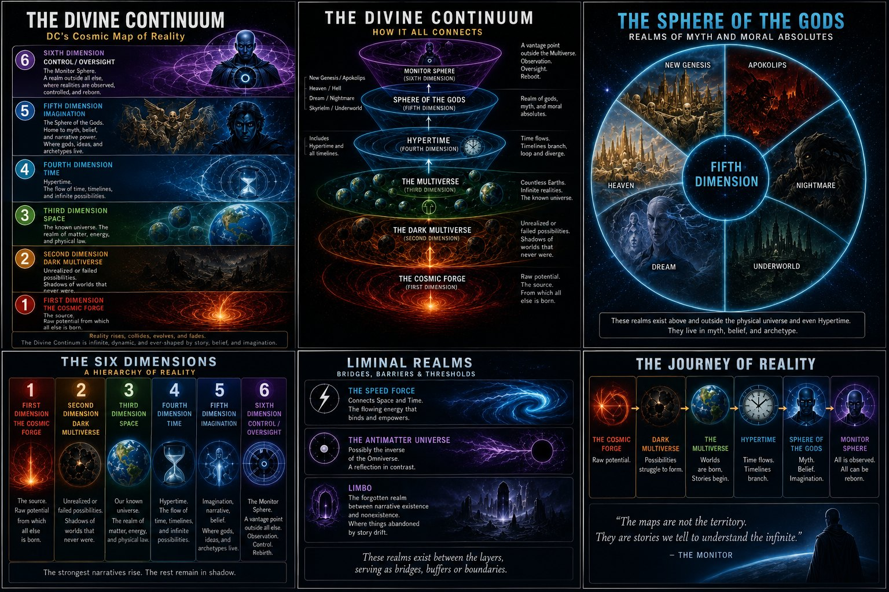

Occupational hazard: I read comic cosmology the way I read system diagrams. Somewhere around my third pass through DC's grand map of reality, I realized it wasn't a map at all. It was an architecture document. So here's my review of the stack.

Two kinds of "dimension"
Physics means something specific by the word: axes. Up and down, left and right, forward and back, plus time if you're feeling relativistic. Even M-theory, with its eleven dimensions, is still just adding axes; most of them curled up too small to notice. Call those little-d dimensions.
DC means something else entirely. When the comics say "the Fifth Dimension," home of Mister Mxyzptlk and the other imps, they don't mean a fifth direction. They mean a higher tier of reality; an abstraction layer. Scott Snyder's Justice League run made the scheme explicit: the Third Dimension is Space, the Fourth is Time, the Fifth is Imagination, and the Sixth is Control. Little-d dimensions are coordinates. Big-D Dimensions are layers. All of our spatial axes live inside the Third; our single arrow of time runs inside the Fourth. Everything above that stops being geometry and starts being meaning.
The stack
Dark Nights: Metal and the Sixth Dimension arc filled in the rest of the architecture, and laid out top to bottom it reads like an infrastructure diagram:
Between the layers sit the middleware and the buffers: the Speed Force bridging Space and Time like a message bus, the Antimatter Universe running as the inverted mirror environment, and Limbo holding every character the narrative orphaned but never quite deallocated.

Is any of this physics? Not remotely. That's the point. DC borrowed scientific vocabulary and built a theology with it. Marvel shipped a cinematic universe; DC has spent eighty years maintaining a mythology, and the maintenance history is visible in the architecture.

The Alpha and the Omega
Which brings me to the current era. The "All In" initiative (and I refuse to be distracted by the fact that it abbreviates to "AI," though somebody in that marketing meeting knew) pairs the prime Alpha universe against the new Absolute Omega universe, and the further it develops, the less it reads as hero-world-versus-dark-world and the more it reads as a duality: two halves that oppose and complete each other. Reading Absolute Green Lantern #4 recently, with its pointed "OA" nod, I kept seeing the same shape; Omega and Alpha as one self-perpetuating cycle rather than two competing states.

The oldest name for that shape is yin and yang. Star Wars fans might reach for a force dyad. My favorite parallel comes from Shinto, where a single kami carries two aspects: the ara-mitama, its wild and destructive face, and the nigi-mitama, its calm and harmonious one. Same spirit, two expressions, whole only together. And yes, a guy who spends his working hours pairing red teams with blue teams to make purple was always going to find that resonance. Opposition as a feature of the design, not a bug in it.
I could be reading tea leaves here. But the pattern keeps rhyming, and I'm genuinely eager to see whether the next event arc confirms it.
Why it holds up
Taken whole, DC's cosmology is a modern myth built from quantum vocabulary, metaphysics, comparative religion, and pure narrative logic. Messy, layered, occasionally self-contradicting, and profound anyway; like any long-lived production system. At the bottom of the stack sits a forge of raw potential, and at the top sits a watchtower, and strung between them is every story anyone ever believed in hard enough. In fiction, as in dreams, anything is possible; the architecture just tells you where it runs.

Further reading: the DC Fandom wiki entries on the Multiverse, the Divine Continuum, the Absolute Universe, Earth Omega, and DC All In Special #1. For a superb deep-dive on Darkseid's place in all this, Tyler's "The Imaginary Axis" on YouTube is the channel to watch; start with his breakdown of Darkseid's true nature, then the follow-up.